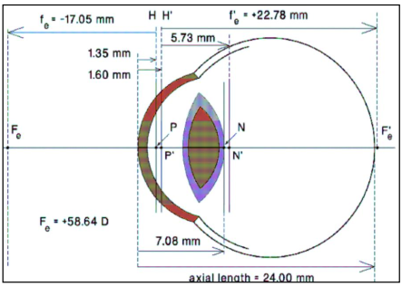
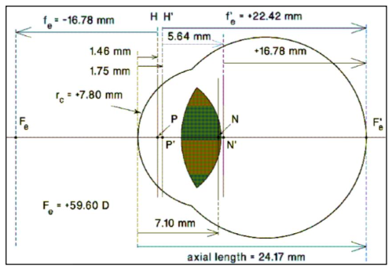
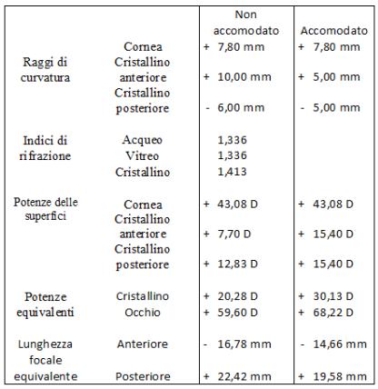
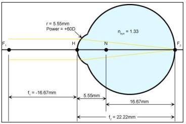
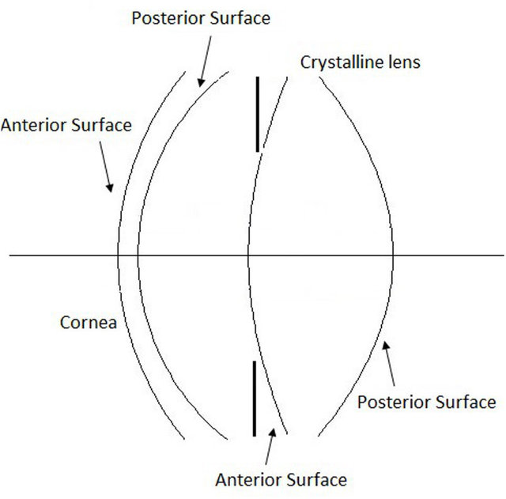
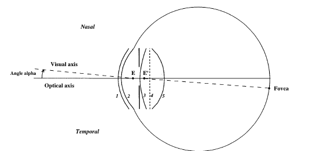
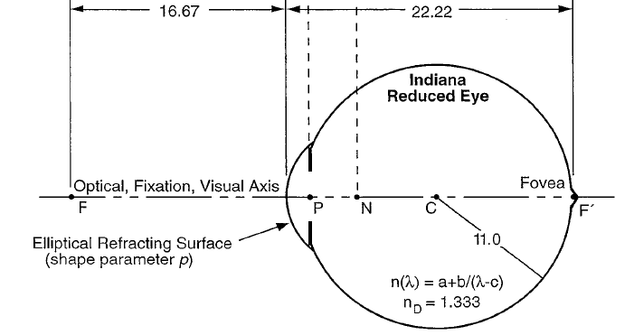

Obiettivi
- Spiegare perché semplifichiamo l’occhio con modelli ottici.
- Distinguere modelli multisuperficie e occhio ridotto.
- Separare distanza vertice-retina, distanza focale e distanza nodo-retina.
- Calcolare una dimensione retinica da un piccolo angolo visivo.
- Scegliere un modello coerente con lo scopo del calcolo.
Che cos’è un occhio schematico?
Livello intuitivo: È un modello dell’occhio con dimensioni e materiali definiti. Come una mappa, conserva ciò che serve per rispondere a una domanda, senza riprodurre ogni dettaglio reale.
Per essere maggiormente rigorosi: Un occhio schematico specifica superfici, separazioni, indici ed eventualmente asfericità e gradienti. Non rappresenta automaticamente ogni individuo. Per confrontare risultati occorre dichiarare versione del modello, lunghezza d’onda e stato accomodativo.
I sei modelli della presentazione
Occhio schematico esatto di Gullstrand
Livello intuitivo: Distingue la parte anteriore e posteriore della cornea e più zone del cristallino. Permette di seguire la luce attraverso più passaggi di materiale.
Per essere maggiormente rigorosi: Il modello esatto distingue corteccia e nucleo del cristallino mediante indici e superfici differenti. La figura della presentazione riporta un potere equivalente di circa e una lunghezza assiale di nella configurazione illustrata. Distanze principali, nodali e focali appartengono a riferimenti diversi.

Occhio schematico semplificato di Gullstrand
Livello intuitivo: Riduce il numero di dettagli del modello esatto, mantenendo una descrizione separata di cornea e cristallino. I calcoli diventano più gestibili.
Per essere maggiormente rigorosi: La versione a tre superfici raffigurata tratta la cornea come un elemento equivalente e il cristallino come una lente omogenea. I valori della figura sono circa e di lunghezza assiale. La tabella distingue stato non accomodato e accomodato: non sono due occhi anatomici diversi.


Occhio ridotto di Emsley
Livello intuitivo: Tutto il sistema viene sostituito da un solo diottro equivalente. È utile per stimare rapidamente dove arriva la luce e quanto è grande l’immagine retinica.
Per essere maggiormente rigorosi: Nel modello qui adottato e . Il raggio equivalente è circa e la distanza vertice-retina è . Il nodo coincide col centro della superficie e dista circa dalla retina. Il diottro rappresenta l’intero sistema, non la sola cornea anatomica.

Occhio schematico di Navarro
Livello intuitivo: Usa superfici non perfettamente sferiche per simulare meglio come l’occhio forma immagini e aberrazioni, anche fuori dal centro.
Per essere maggiormente rigorosi: Il modello classico del 1985 impiega quattro superfici rifrangenti e descrive il cristallino con un indice omogeneo equivalente, non con un gradiente interno come quello di Liou–Brennan. Asfericità, dispersione e variazioni legate all’accomodazione dipendono dalla formulazione adottata. Non tutti i parametri riportati nelle diverse versioni sono intercambiabili.

Occhio schematico di Liou e Brennan
Livello intuitivo: Aggiunge una descrizione interna più realistica del cristallino e tiene conto del fatto che asse visivo e asse ottico non coincidono perfettamente.
Per essere maggiormente rigorosi: Il modello del 1997 comprende quattro superfici asferiche e un cristallino a gradiente d’indice, oltre a una geometria che considera decentramento della pupilla e direzione visiva. È progettato per simulazioni ottiche finite. Un singolo “indice medio” non sostituisce tutte le equazioni del gradiente.

Occhio ridotto di Thibos
Livello intuitivo: Il modello ridotto conserva pochi elementi, ma li sceglie per rappresentare anche caratteristiche come forma della superficie e variazione del comportamento con il colore.
Per essere maggiormente rigorosi: L’Indiana reduced eye raffigurato usa una superficie rifrangente asferica equivalente e un indice dipendente dalla lunghezza d’onda. Non è un modello con cornea e cristallino anatomici separati. I e indicati nella figura sono riferimenti ottici differenti, non due valori alternativi della stessa distanza. Il modello ha limiti nella rappresentazione individuale e dell’accomodazione.

Dimensione dell’immagine retinica
Cosa Vuol dire?
Livello intuitivo: A parità di modello, un oggetto con angolo visivo doppio forma un’immagine retinica circa doppia.
Per essere maggiormente rigorosi: Per piccoli angoli usiamo radianti. Con e si ottiene . La distanza nodo-retina non va sostituita automaticamente con la focale immagine.
Quale modello scegliere?
Livello intuitivo: Un occhio ridotto basta per una stima semplice. Per studiare le singole superfici, il fuori asse o il gradiente del cristallino serve un modello più articolato.
Per essere maggiormente rigorosi: Occorre dichiarare versione, lunghezza d’onda e stato accomodativo. Un modello di popolazione non garantisce la previsione esatta del comportamento di un singolo occhio.
Riferimenti
- Navarro, Santamaría e Bescós (1985), Accommodation-dependent model of the human eye with aspherics: modello accomodativo con superfici asferiche.
- Liou e Brennan (1997), Anatomically accurate, finite model eye for optical modeling: modello anatomico con cristallino a gradiente d’indice.
- Thibos, Ye, Zhang e Bradley (1992), The chromatic eye: a new reduced-eye model of ocular chromatic aberration in humans: modello ridotto per l’aberrazione cromatica.
- Thibos, Ye, Zhang e Bradley (1997), Spherical aberration of the reduced schematic eye with elliptical refracting surface: superficie equivalente asferica e aberrazione sferica.